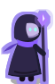
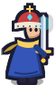
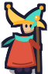
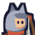
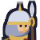

Сезон: пьедестал топ-3 — облики целиком, ниже — строки с стилем игрока: значок самой сильной оси его лучшего забега. Внизу всегда «Ты» и сколько очков до следующего места — цель на один забег, а не на сезон. Круги — сезон, друзья, чат, дивизион (WP15); периоды — сезон, неделя, всё время.
Забег прошёл проверку повтором на сервере. Сила считается на старте: уровень, снаряжение, улучшения, бусты — под неё подстроен и сам забег (Р65), и ожидаемое по осям.
Карточка забега (WP35) из строки рейтинга: «паутина» пяти осей против ожидаемого для силы игрока (пунктир) и разбор очков полосами — видно, за что очки и где расти. Тонкая черта на полосе — ожидаемое. Ниже — сборка: оружие, эволюции, навыки, бусты. Персональных данных нет.
Сезон и дивизион: место в процентах сезона, а не в абсолютных очках — дивизион не цементируется первыми игроками (docs/10 §4). Награды сезона — облик и знак (престиж) плюс валюта. «Твой стиль» — сильная и слабая ось по последним забегам и подсказка, что растит очки, — рейтинг подсказывает, как играть лучше.